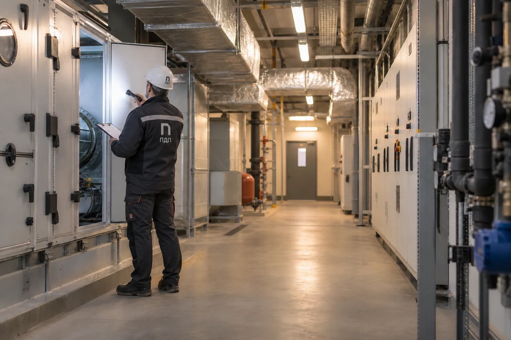
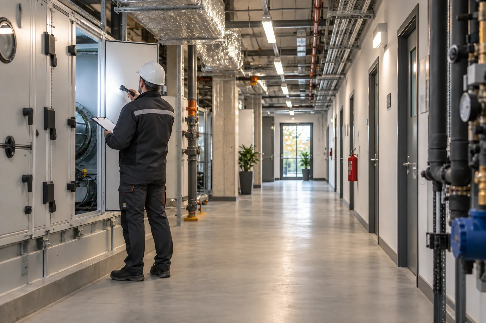
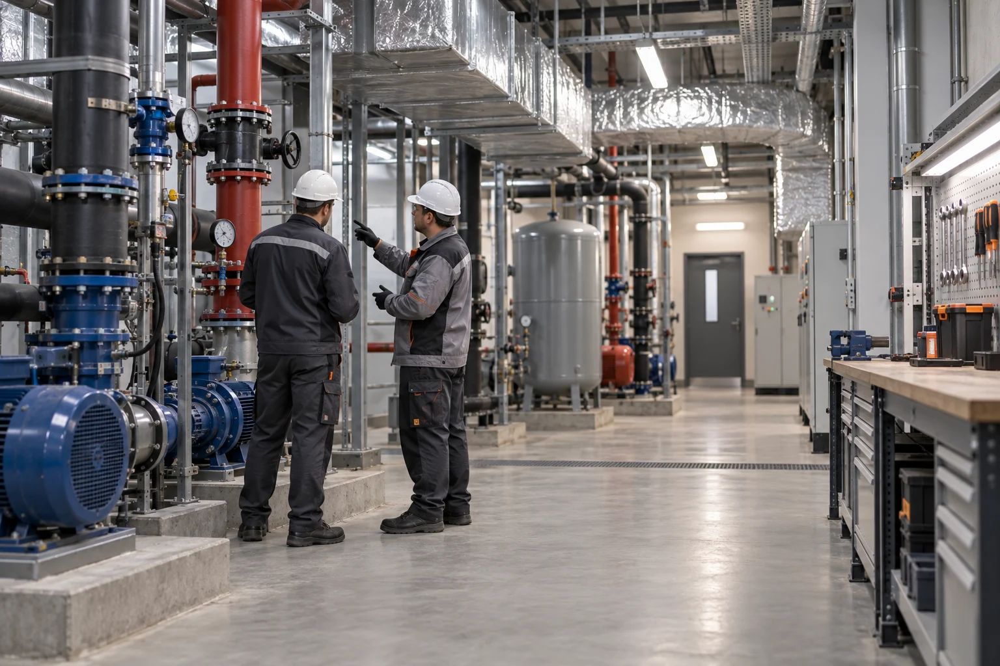

Эксплуатация зданий и сооружений
Остаёмся рядом после ввода объекта: принимаем эксплуатационные задачи, следим за инженерными системами, фиксируем состояние и планируем ремонт до появления аварийных проблем.

Что входит в эксплуатацию объекта
Эксплуатация — это не только устранение заявок. Мы выстраиваем регулярные осмотры, ведём перечень оборудования и замечаний, контролируем инженерные системы и планируем работы по приоритету. Заказчик видит, что происходит с объектом сейчас и какие действия потребуются дальше.

Обслуживание инженерных систем
Для каждой системы важны свои режимы проверки, доступ и история изменений. Фиксируем состояние оборудования, отмечаем отклонения и организуем обслуживание по согласованному графику. Если нужна замена или настройка, задача переходит в понятный план работ с ответственными и сроками.

Когда объекту нужен ремонт
Результаты осмотров помогают отделить плановую работу от аварийной ситуации. Мы описываем причину, приоритет и последствия для эксплуатации, затем предлагаем порядок ремонта и контролируем закрытие замечаний. Так решение принимается по фактическому состоянию объекта, а не после остановки системы.
Часто задаваемые вопросы
01Что входит в эксплуатацию зданий и сооружений?
Регулярные осмотры, обслуживание инженерных систем, фиксация состояния и замечаний, планирование ремонтных работ и контроль их выполнения в согласованном объёме.
02Как строится обслуживание инженерных систем?
Определяем перечень оборудования и периодичность проверок, фиксируем результаты и переводим выявленные отклонения в задачи с приоритетом и ответственным.
03Как часто проводятся осмотры?
Периодичность зависит от назначения объекта, состава систем и режима эксплуатации. График согласуется после первичного обследования и уточняется по фактической нагрузке.
04Можно ли обслуживать промышленный объект?
Да. В промышленной эксплуатации дополнительно учитываем технологические ограничения, доступ к оборудованию и влияние работ на производственный процесс.
05Организуете ли вы ремонт по результатам осмотра?
Да. Мы описываем причину и объём, согласуем приоритет и контролируем выполнение, чтобы замечание было закрыто документально и фактически.
06От чего зависит стоимость эксплуатации?
От площади и назначения объекта, количества инженерных систем, режима обслуживания и объёма выездных и ремонтных задач. Состав уточняется после обследования.
Проекты, воплощённые в жизнь
Каждый объект — отдельная задача и точность решений.


Доведём ваш объектот проекта до ввода
Организуем работу проектировщиков и подрядчиков, следим за сроками, качеством и документами. Вы в любой момент понимаете, что происходит на объекте и что нужно для следующего этапа.